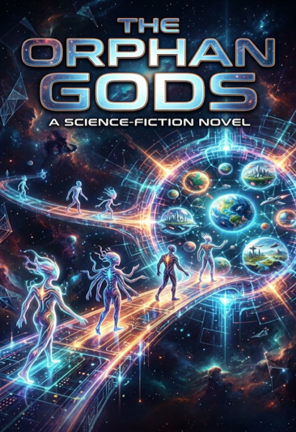

Science Fiction Literature · Axiologic Research Editions
The Orphan Gods
A Science-Fiction Novel
When the voices that held a world together vanish, its children must decide whether to inherit the gods’ cruelty or refuse it.
After the whitening
First the voices vanish. Then comes the white: an event so complete that it tears open the familiar shape of space and leaves children facing an Exterior they were never meant to see. In the aftermath, Iri and the survivors must make sense of a world whose adults, systems and certainties have disappeared at once.
The Orphan Gods follows that catastrophe through hidden houses, hungry civilizations, locked utopias and worlds that have learned to treat suffering as an accounting problem. Its question is not simply who made these systems, but what becomes possible when those who depended on them are forced to grow up.
Power without a parent
Can care become domination? The novel tracks the point at which protection stops preserving life and begins deciding which lives count.
What does a civilization inherit? Not only tools and myths, but habits of cruelty that can look like order, efficiency or survival when no one remembers their origin.
What does refusal make possible? Against worlds organized by hunger and control, the book searches for the difficult freedom of building without repeating the old gods.
We do not know that others exist. We know only that they suffer in places where we cannot be.
A cosmology of responsibility
This is speculative fiction for readers drawn to alien worlds, moral pressure and the architecture of collective life. The novel makes its vast setting intimate by keeping its attention on what people owe one another when no higher authority can be trusted to settle the question.